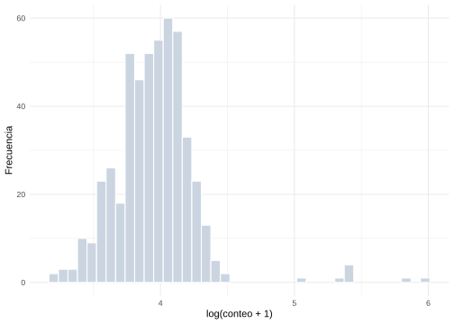
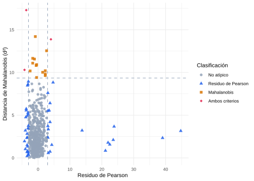
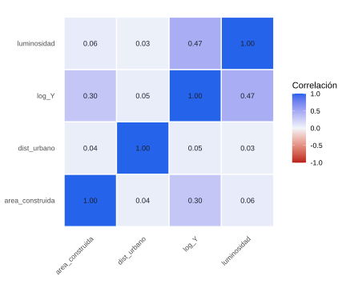

Capítulo 3 Preparación de Insumos para Modelamiento
La construcción de un modelo bayesiano de estimación subnacional requiere, como condición previa, disponer de un conjunto de insumos analíticos preparados con criterios estadísticos explícitos y documentados. La calidad de las estimaciones finales depende no solo de la sofisticación del modelo, sino fundamentalmente de la coherencia, completitud y representatividad de los datos que lo alimentan.
Este capítulo describe el proceso de preparación de insumos en cuatro etapas secuenciales: la estandarización de las fuentes de información, la evaluación de cobertura por segmento, la construcción de la variable dependiente y el diagnóstico exploratorio de los datos. Cada etapa introduce operaciones estadísticas específicas cuya omisión puede comprometer la validez de las inferencias posteriores.
3.1 Estandarización de fuentes
Las fuentes de información descritas en el capítulo anterior provienen de sistemas institucionales con distintas definiciones operativas, unidades de medida, fechas de referencia y marcos territoriales. Su incorporación conjunta en un modelo estadístico exige un proceso previo de estandarización que garantice la comparabilidad entre fuentes y la compatibilidad con los dominios de estimación definidos.
3.1.1 Homologación de variables
La homologación consiste en establecer correspondencias semánticas y operativas entre variables provenientes de distintas fuentes que miden conceptos equivalentes o relacionados bajo definiciones diferentes. Este proceso es necesario porque los sistemas administrativos, los registros satelitales y los datos censales utilizan nomenclaturas, clasificaciones y criterios de asignación territorial que no siempre son directamente comparables.
Compatibilización de marcos territoriales. El primer paso en la homologación es garantizar que todas las fuentes estén referenciadas al mismo marco geográfico. En América Latina y el Caribe, los distintos registros administrativos suelen estar organizados por municipios, provincias o departamentos que no coinciden directamente con los segmentos censales. Sea \(\mathcal{S} = \{1, 2, \ldots, I\}\) el conjunto de segmentos del operativo censal y \(\mathcal{U} = \{1, 2, \ldots, J\}\) las unidades geográficas del registro administrativo —un marco de referencia distinto del nivel territorial superior indexado también por \(j\) en los efectos aleatorios del Capítulo 4, con el que puede o no coincidir—. La asignación de cada registro al segmento correspondiente requiere construir una función de mapeo \(\phi: \mathcal{S} \to \mathcal{U}\) que identifica, para cada segmento \(i\), la unidad administrativa \(j(i)\) que lo contiene, basada en la intersección espacial entre las geometrías de ambos marcos.
Cuando las unidades del registro son más grandes que los segmentos censales —el caso habitual en la región, donde un municipio, provincia o departamento agrupa numerosos segmentos—, la compatibilización no desagrega el conteo administrativo entre esos segmentos: todos los segmentos pertenecientes a una misma unidad territorial reciben el mismo valor, el de la unidad que los contiene. Formalmente:
\[ \hat{Y}_i^{(A)} = Y_{j(i)}^{(A)} \]
donde \(Y_{j(i)}^{(A)}\) es el conteo total del registro administrativo (Sección 2.2.3 del Capítulo 2) en la unidad territorial \(j(i)\) a la que pertenece el segmento \(i\). Bajo este esquema, la covariable resultante es constante entre los segmentos de una misma unidad administrativa y solo varía de una unidad a otra, por lo que su capacidad para explicar diferencias de población entre segmentos vecinos de la misma unidad es limitada; esta limitación debe documentarse al evaluar la pertinencia de la covariable en el diagnóstico exploratorio (Sección 3.4.3 más adelante en este capítulo). La notación \(Y^{(A)}\) sigue el mismo convenio de superíndices por fuente empleado más adelante para el conteo censal \(Y_i^{(C)}\).
Validación de la completitud y pertinencia del registro administrativo. Las distintas fuentes administrativas pueden diferir de los censos en la definición de su unidad de observación. Mientras que los censos contabilizan personas según su residencia habitual o su presencia durante el operativo censal, los padrones electorales registran ciudadanos habilitados para votar, los sistemas de salud registran afiliados activos y los registros civiles documentan hechos vitales. Estas diferencias responden a los objetivos específicos de cada sistema de información y no impiden su utilización como fuentes auxiliares para el modelamiento de la población.
Dado que los registros administrativos se incorporan como covariables explicativas y no como una medición alternativa de la población, su evaluación se centra en dos aspectos fundamentales: la completitud y la pertinencia. La completitud hace referencia a la cobertura territorial del registro, verificando que no existan segmentos sistemáticamente ausentes o con información insuficiente. La pertinencia evalúa si la unidad de observación y las variables disponibles mantienen una relación conceptual con la población que se desea modelar. En consecuencia, las diferencias conceptuales entre las fuentes deben documentarse como parte de la caracterización de las covariables, ya que constituyen un elemento clave para interpretar adecuadamente su contribución al modelo.
Desfase temporal entre fuentes. Las fuentes de información suelen corresponder a diferentes fechas de referencia. Los preconteos pueden realizarse meses antes del censo, los registros administrativos responden a fechas de corte específicas y las imágenes satelitales capturan el territorio en distintos momentos del año. Dado que estas fuentes se utilizan como covariables auxiliares y no como mediciones directas de la población, el desfase temporal se documenta como una fuente adicional de incertidumbre y las variables se incorporan en la fecha en que se encuentran disponibles. Cuando una misma fuente dispone de información para varios periodos, se evalúa la redundancia entre las distintas versiones mediante análisis de correlación y del factor de inflación de la varianza (VIF) (Sección 3.4.3), conservando únicamente aquellas que aportan información adicional al modelo.
3.1.2 Normalización de variables
Una vez homologadas, las variables auxiliares presentan distribuciones con escalas y dispersiones heterogéneas que dificultan la estimación numérica de los coeficientes y la interpretación comparada de los efectos. La normalización transforma las variables a una escala común que facilita la estimación y mejora el comportamiento computacional de los algoritmos de inferencia.
Estandarización por media y desviación estándar. Para una variable continua \(x_{i,k}\) medida en el segmento \(i\), la estandarización produce:
\[ \tilde{x}_{i,k} = \frac{x_{i,k} - \bar{x}_k}{s_k} \]
donde \(\bar{x}_k = \frac{1}{I}\sum_{i=1}^{I} x_{i,k}\) es la media y \(s_k = \sqrt{\frac{1}{I-1}\sum_{i=1}^{I}(x_{i,k} - \bar{x}_k)^2}\) es la desviación estándar de la variable calculadas sobre todos los segmentos. Bajo esta transformación, \(\tilde{x}_{i,k}\) tiene media cero y desviación estándar uno, y el coeficiente \(\beta_k\) se interpreta como el cambio esperado en el logaritmo de la población por unidad de desviación estándar en la covariable \(k\).
Normalización al intervalo unitario. Para variables que representan proporciones o índices con interpretación intrínseca en el rango \([0,1]\), como tasas de cobertura o índices de vegetación, puede ser preferible la normalización min-max:
\[ \tilde{x}_{i,k} = \frac{x_{i,k} - \min_i(x_{i,k})}{\max_i(x_{i,k}) - \min_i(x_{i,k})} \]
Esta transformación preserva la interpretación original de la variable y facilita la especificación de distribuciones a priori informativas sobre los coeficientes.
Tratamiento de valores faltantes. La presencia de valores faltantes en las covariables auxiliares debe ser resuelta antes de la estimación. Las estrategias más comunes incluyen la imputación por la mediana o la media del grupo territorial al que pertenece el segmento, la imputación mediante modelos de regresión utilizando covariables con cobertura completa, y la imputación múltiple para propagar la incertidumbre asociada a los valores faltantes hacia las estimaciones finales.
3.2 Evaluación de cobertura
La evaluación de cobertura censal por segmento es un paso crítico previo a la estimación. Permite identificar los dominios con información deficiente, cuantificar el grado de omisión territorial y establecer una clasificación de los segmentos que oriente las decisiones de modelamiento.
La tasa de cobertura de un segmento censal expresa la proporción de la población del segmento que fue efectivamente enumerada durante el operativo censal. Como la población verdadera no es observable, la cobertura debe estimarse utilizando una referencia externa, como un preconteo operativo ajustado o una estimación demográfica independiente.
Si \(\widehat{N}_i\) representa la población de referencia del segmento \(i\) y \(Y_i^{(C)}\) el conteo obtenido por el censo, la tasa de cobertura se calcula como
\[ \hat{c}_i=\frac{Y_i^{(C)}}{\widehat{N}_i}. \]
Un valor cercano a uno indica que el conteo censal es consistente con la población de referencia. Valores inferiores a uno sugieren subcobertura, mientras que valores superiores a uno pueden reflejar sobrecobertura o diferencias entre el conteo censal y la fuente utilizada como referencia.
La comparación de las tasas de cobertura entre segmentos permite identificar áreas donde el operativo censal presentó mayores dificultades de enumeración. Cuando la cobertura varía significativamente entre segmentos, la omisión deja de ser un fenómeno aleatorio y pasa a depender de características territoriales u operativas. En estos casos, la información sobre cobertura constituye un insumo importante para interpretar la calidad de los datos y para definir la estrategia de modelamiento de la población en los segmentos afectados.
3.2.1 Clasificación de segmentos
La estrategia de estimación depende del nivel de cobertura observado en cada segmento censal. Con base en la tasa de cobertura estimada, los segmentos se clasifican en tres grupos:
Cobertura completa (\(\hat{c}_i = 1\)). El operativo censal logró enumerar la totalidad de la población del segmento. En este caso, el conteo observado se considera completo y se utiliza para ajustar el modelo de población.
Cobertura nula (\(\hat{c}_i = 0\)). El segmento no fue enumerado durante el operativo censal. La población se estima íntegramente mediante el modelo, utilizando la información auxiliar disponible.
Cobertura parcial (\(0 < \hat{c}_i < 1\)). El operativo censal logró enumerar únicamente una fracción de la población del segmento. En este caso, el modelo estima la población no observada y la estimación final se obtiene combinando el conteo censal observado con la predicción correspondiente a la población omitida.
Esta clasificación determina el papel que desempeña el modelo en cada segmento: reproducir el conteo observado cuando la cobertura es completa, predecir la población cuando la cobertura es nula y complementar el conteo censal cuando la cobertura es parcial. La expresión formal de la variable dependiente bajo estos tres casos se presenta en la sección siguiente.
3.3 Construcción de la variable dependiente
La variable dependiente corresponde al número de personas que residen en cada segmento censal. Su construcción combina el conteo censal observado con la predicción del modelo según el nivel de cobertura del segmento, siguiendo la clasificación de la Sección 3.2.1.
Sea \(Y_i^{(C)}\) el conteo censal observado en el segmento \(i\) y \(\widehat{Y}_i^{(M)}\) la población omitida estimada por el modelo cuando la cobertura no es completa. La variable dependiente se define como:
\[ Y_i= \begin{cases} Y_i^{(C)}, & \hat{c}_i=1\\ \widehat{Y}_i^{(M)}, & \hat{c}_i=0\\ Y_i^{(C)}+\widehat{Y}_i^{(M)}, & 0<\hat{c}_i<1, \end{cases} \qquad i=1,\ldots,I. \]
Esta definición asigna a cada segmento el conteo observado cuando la enumeración fue completa, la predicción íntegra del modelo cuando no hubo enumeración, y la suma de ambas fuentes cuando la cobertura fue parcial.
En los capítulos siguientes, una vez desarrollado el modelo para el conteo total de personas, se extenderá la metodología para estimar la población desagregada por sexo y grupos de edad, preservando la coherencia entre las estimaciones agregadas y sus componentes.
3.3.1 Densidad poblacional
Aunque la variable dependiente del modelo es el número de personas por segmento, en el análisis exploratorio resulta útil considerar la densidad poblacional como una medida complementaria de la distribución espacial de la población. La densidad permite comparar segmentos con áreas muy diferentes y facilita la identificación de patrones de concentración o dispersión que pueden ser explicados por las covariables auxiliares.
Si \(Y_i\) representa el número de personas del segmento \(i\) y \(A_i\) su superficie, la densidad poblacional se define como
\[ \text{DP}_i=\frac{Y_i}{A_i}, \]
donde \(A_i\) se expresa en kilómetros cuadrados u otra unidad de superficie consistente. Se usa \(\text{DP}_i\), y no \(D_i\), por la misma razón señalada en el Capítulo 1: evitar confusión con la cardinalidad \(D=|\mathcal{S}|\) introducida en el Capítulo 4. La densidad no constituye la variable de respuesta del modelo, sino una variable derivada utilizada para el análisis exploratorio, la evaluación de valores atípicos y la interpretación de la variabilidad espacial de la población.
3.3.2 Número promedio de personas por hogar
El número promedio de personas por hogar constituye un indicador descriptivo que relaciona la población observada con el número de hogares del segmento censal. Este indicador resume la intensidad de ocupación residencial y permite identificar segmentos con valores inusualmente bajos o altos que pueden reflejar problemas de cobertura, errores de enumeración o características particulares del territorio.
Sea \(Y_i\) el número de personas del segmento \(i\) y \(H_i\) el número de hogares registrados en el mismo segmento. El promedio de personas por hogar se calcula como
\[ \bar{P}_i=\frac{Y_i}{H_i}, \]
donde \(H_i>0\). Este indicador se utiliza principalmente durante el análisis exploratorio para evaluar la consistencia de la información censal y comparar segmentos con características similares. Valores extremos pueden señalar la necesidad de revisar la calidad de los datos o la existencia de condiciones demográficas particulares que deban considerarse durante la especificación del modelo.
3.3.3 Definición de población base
La población base define el universo de referencia sobre el cual se construye el conteo de interés. Su especificación correcta es fundamental para garantizar la comparabilidad entre segmentos y la coherencia con los totales de niveles superiores.
La definición de población base más común en censos de población es la población residente habitual: el conjunto de personas cuya residencia principal está localizada en el segmento en el momento del censo. Sin embargo, algunos censos implementan el criterio de población de hecho, que contabiliza a las personas presentes en el segmento durante el momento censal, independientemente de su residencia habitual.
Formalmente, la población base \(\mathcal{P}_i\) del segmento \(i\) puede definirse bajo distintos criterios:
- Población residente: \(\mathcal{P}_i = \{j : \text{residencia habitual de } j \text{ está en } i\}\)
- Población de hecho: \(\mathcal{P}_i = \{j : j \text{ está físicamente presente en } i \text{ en el momento censal}\}\)
- Población en hogares particulares: excluye a las personas en colectividades institucionales (hospitales, cárceles, cuarteles).
- Población civil: excluye adicionalmente al personal militar.
La elección de la población base afecta la coherencia de los conteos en territorios con alta movilidad diurna, presencia de instituciones totales o frontera entre áreas urbanas y rurales. El modelo de estimación debe adaptarse a la misma definición de población base utilizada en el operativo censal.
3.3.4 Variable de exposición
En los modelos de conteo es frecuente incorporar una variable de exposición que represente el tamaño potencial del segmento. En este libro, la exposición corresponde al número de estructuras habitacionales o viviendas identificadas durante el preconteo, denotado por \(V_i\). Esta variable constituye una aproximación al tamaño físico del segmento y está disponible incluso en aquellos casos donde el operativo censal presenta cobertura parcial o nula.
La utilización de \(V_i\) permite comparar segmentos con diferentes tamaños y modelar el número esperado de personas en función de la cantidad de estructuras existentes. En los modelos de conteo desarrollados en el Capítulo 4, esta variable se incorpora mediante un término de offset, de forma que las covariables expliquen la intensidad poblacional por estructura habitacional y no únicamente el conteo absoluto de personas.
3.4 Diagnóstico exploratorio
Antes de ajustar el modelo bayesiano, es indispensable realizar un análisis exploratorio sistemático de los datos preparados. Este diagnóstico permite verificar la coherencia interna de los insumos, identificar observaciones atípicas, evaluar la capacidad predictiva de las covariables y detectar posibles violaciones de los supuestos del modelo.
A continuación se ilustran los diagnósticos descritos sobre el conjunto de segmentos preparado según los criterios de las secciones anteriores, con la densidad latente \(\delta_i\), el offset de estructuras habitacionales \(V_i\) y el conteo poblacional \(Y_i\) ya construidos:
3.4.1 Distribución de conteos
El análisis de la distribución de los conteos observados \(Y_i\) permite caracterizar la variabilidad entre segmentos y evaluar la adecuación de las familias distribucionales consideradas para el modelamiento.
Los estadísticos descriptivos básicos —media, mediana, desviación estándar, coeficientes de asimetría y curtosis— proveen una caracterización inicial de la distribución. La comparación entre la media y la varianza muestral:
\[ \bar{Y} = \frac{1}{I}\sum_{i=1}^{I} Y_i, \qquad S^2_Y = \frac{1}{I-1}\sum_{i=1}^{I}(Y_i - \bar{Y})^2 \]
ofrece un diagnóstico informal de sobredispersión: si \(S^2_Y \gg \bar{Y}\), el modelo de Poisson simple resulta insuficiente. En ese caso, el diagnóstico respalda la especificación jerárquica con densidad latente log-normal (Poisson-lognormal) desarrollada en el Capítulo 4, dado que es precisamente el parámetro \(\sigma\) de la densidad latente \(\delta_i\) quien absorbe la sobredispersión detectada aquí. El índice de dispersión \(\text{ID} = S^2_Y / \bar{Y}\) cuantifica el grado de sobredispersión; valores superiores a 1.5 o 2 suelen justificar esa especificación más flexible. Se usa \(\text{ID}\), y no \(D\), para no confundir este índice con la cardinalidad \(D=|\mathcal{S}|\) del Capítulo 4.
El Código 3.1 calcula estos estadísticos sobre los conteos observados.
Código 3.1 (Cálculo de estadísticos descriptivos)
library(tidyverse)
# Asimetría y curtosis muestrales (evita la dependencia del paquete moments)
skewness <- function(x) mean((x - mean(x))^3) / sd(x)^3
kurtosis <- function(x) mean((x - mean(x))^4) / sd(x)^4
resumen_conteos <- tibble(
n_segmentos = length(Y),
media = mean(Y),
mediana = median(Y),
desv_est = sd(Y),
asimetria = skewness(Y),
curtosis = kurtosis(Y),
indice_disp = var(Y) / mean(Y)
)| N.º segmentos | Media | Mediana | Desv. estándar | Asimetría | Curtosis | Índice de dispersión |
|---|---|---|---|---|---|---|
| 500 | 54.29 | 51 | 28.9 | 6.92 | 65.11 | 15.38 |
La Tabla 3.1 resume los estadísticos descriptivos calculados sobre los 500 segmentos. El índice de dispersión es 15.38, muy por encima de 1, lo que confirma la sobredispersión de los conteos y respalda la especificación jerárquica con densidad latente log-normal desarrollada en el Capítulo 4. El coeficiente de asimetría (6.92) señala una distribución con cola derecha pesada, mientras que la curtosis (65.11) evidencia un comportamiento leptocúrtico respecto a la distribución normal (\(\text{curtosis}=3\)). Este patrón es característico de los conteos poblacionales por segmento, donde la mayoría de las unidades presenta valores moderados y un número reducido de segmentos concentra valores extremos.
tibble(log_Y = log(Y + 1)) %>%
ggplot(aes(x = log_Y)) +
geom_histogram(bins = 40, fill = "#CBD5E1", color = "white") +
labs(x = "log(conteo + 1)", y = "Frecuencia") +
theme_minimal()
Figura 3.1: Distribución de log(Y + 1) por segmento
La visualización de la distribución debe realizarse tanto en escala original como en escala logarítmica. En la escala original, la distribución suele ser fuertemente asimétrica con cola derecha pesada; en la escala logarítmica, la distribución es más simétrica y permite evaluar si la especificación log-lineal es adecuada.
La proporción de ceros en los conteos es otro indicador relevante. Un exceso de ceros respecto a lo esperado bajo el modelo de Poisson puede indicar la presencia de segmentos genuinamente deshabitados, problemas de cobertura en áreas con baja densidad, o la necesidad de incorporar un componente de inflación de ceros en el modelo.
3.4.2 Outliers
La identificación de observaciones atípicas en los conteos y en las covariables auxiliares es fundamental para evitar que estas observaciones dominen la estimación de los parámetros del modelo. En el contexto de datos de conteo, los outliers pueden manifestarse como valores excepcionalmente altos o bajos en relación con la tendencia general de los datos, o como combinaciones inusuales de conteo y covariables.
Detección basada en residuos del modelo nulo. Un modelo de regresión de Poisson sin covariables permite obtener residuos de Pearson para cada segmento:
\[ r_i^P = \frac{Y_i - \hat{\lambda}_i}{\sqrt{\hat{\lambda}_i}} \]
donde \(\hat{\lambda}_i = \exp(\hat{\alpha})\) con \(\hat{\alpha} = \log(\bar{Y})\). Segmentos con \(|r_i^P| > 3\) son candidatos a revisión como observaciones atípicas.
Detección multivariada. Las observaciones atípicas en el espacio de covariables pueden identificarse mediante la distancia de Mahalanobis:
\[ d_i^2 = (\mathbf{x}_i - \bar{\mathbf{x}})^{\top} \hat{\boldsymbol{\Sigma}}^{-1} (\mathbf{x}_i - \bar{\mathbf{x}}) \]
donde \(\bar{\mathbf{x}}\) es el vector de medias y \(\hat{\boldsymbol{\Sigma}}\) es la matriz de covarianza muestral de las covariables. Bajo normalidad multivariada, \(d_i^2 \sim \chi^2_p\), y valores superiores al percentil 97.5 de esta distribución son indicativos de observaciones atípicas en el espacio de covariables.
El Código 3.2 implementa ambos criterios de detección.
Código 3.2 (Detección de observaciones atípicas)
lambda_nulo <- mean(Y)
residuos_p <- (Y - lambda_nulo) / sqrt(lambda_nulo)
segmentos_outlier <- which(abs(residuos_p) > 3)
X_mat <- as.matrix(covariables_std)
d2_mah <- mahalanobis(X_mat, colMeans(X_mat), cov(X_mat))
p_valor <- pchisq(d2_mah, df = ncol(X_mat), lower.tail = FALSE)
outliers_multivariados <- which(p_valor < 0.025)
Figura 3.2: Segmentos atípicos según residuo de Pearson y distancia de Mahalanobis
La Figura 3.2 ubica a cada uno de los 500 segmentos en el plano definido por el residuo de Pearson del modelo nulo y la distancia de Mahalanobis sobre las covariables auxiliares, con líneas punteadas que marcan los respectivos umbrales de decisión (\(|r_i^P| = 3\) y el percentil 97.5 de \(\chi^2_p\)). De ellos, 48 segmentos superan el umbral del residuo de Pearson (categoría “Residuo de Pearson”, en azul), 16 superan el umbral de la distancia de Mahalanobis (categoría “Mahalanobis”, en naranja), y 3 son señalados simultáneamente por los dos criterios (categoría “Ambos criterios”, en rojo).
Los segmentos marcados en rojo constituyen los candidatos prioritarios de revisión, ya que combinan un conteo discordante con el nivel general de la muestra y una combinación inusual de covariables auxiliares. Los segmentos señalados por un solo criterio —ya sea un conteo extremo sin covariables atípicas, o covariables atípicas con un conteo dentro del rango esperado— requieren un análisis más detallado antes de decidir su tratamiento, pues cada criterio captura una forma distinta de atipicidad: el residuo de Pearson detecta conteos discordantes con el nivel medio de la muestra, mientras que la distancia de Mahalanobis detecta combinaciones inusuales en el espacio de las covariables, independientemente del valor del conteo. Una vez identificadas, las observaciones atípicas deben revisarse para determinar si corresponden a errores de procesamiento, a características genuinas del territorio o a problemas de cobertura del operativo. La decisión sobre su tratamiento —corrección, exclusión o inclusión con peso reducido— debe documentarse explícitamente.
3.4.3 Relación entre variables
El análisis de la relación entre la variable dependiente y las covariables auxiliares permite evaluar la pertinencia predictiva de cada fuente de información y orientar las decisiones de especificación del modelo. Dado que el modelo desarrollado en este libro tiene un propósito predictivo y no explicativo, este análisis no busca establecer relaciones causales ni interpretar el efecto individual de cada covariable sobre la población, sino identificar patrones que puedan mejorar la capacidad de predicción del modelo en los segmentos con información censal incompleta.
Correlación con los conteos. La correlación de Pearson entre \(\log(Y_i + 1)\) y cada covariable estandarizada \(\tilde{x}_{i,k}\) proporciona una medida lineal de la asociación bivariada. Covariables con correlación superior a 0.5 en valor absoluto suelen tener valor predictivo relevante; covariables con correlación inferior a 0.1 pueden ser candidatas a exclusión del modelo.
Diagramas de dispersión. La representación gráfica de \(\log(Y_i + 1)\) contra cada covariable permite detectar relaciones no lineales, patrones de heteroscedasticidad y grupos de segmentos con comportamiento diferenciado. La adición de una curva de suavizado no paramétrico (LOESS) facilita la identificación de estructuras no lineales que podrían requerir transformaciones adicionales de las covariables.
Correlación entre covariables. La matriz de correlación entre las covariables auxiliares permite identificar pares con alta colinealidad. Correlaciones superiores a 0.85 en valor absoluto indican que dos covariables aportan información casi redundante. Los factores de inflación de varianza (VIF) son una herramienta complementaria para el diagnóstico de multicolinealidad:
\[ \text{VIF}_k = \frac{1}{1 - R_k^2} \]
donde \(R_k^2\) es el coeficiente de determinación obtenido al regresar la covariable \(k\) sobre el resto de covariables. Valores de \(\text{VIF}_k > 10\) son indicativos de multicolinealidad problemática.
El Código 3.3 calcula la matriz de correlación y los factores de inflación de varianza.
Código 3.3 (Correlación y factores de inflación de varianza)
| Covariable | VIF |
|---|---|
| luminosidad | 1.01 |
| area_construida | 1.01 |
| dist_urbano | 1.00 |
La Tabla 3.2 reporta el VIF de cada covariable. El valor máximo observado es 1.01, muy por debajo del umbral de 10, por lo que no se evidencia multicolinealidad problemática entre las covariables auxiliares.

Figura 3.3: Matriz de correlación entre el conteo poblacional (log) y las covariables auxiliares
La Figura 3.3 muestra la matriz de correlación entre \(\log(Y_i + 1)\) y las covariables estandarizadas, en una escala divergente (rojo = correlación negativa, azul = correlación positiva) que facilita distinguir la dirección y magnitud de cada asociación de un vistazo.
En un modelo de propósito predictivo, la presencia de correlaciones elevadas entre la variable dependiente y las covariables no constituye por sí sola un criterio suficiente para seleccionar o descartar predictores, ni una correlación baja implica necesariamente ausencia de valor predictivo una vez consideradas las demás covariables. De igual forma, la multicolinealidad detectada mediante el VIF no necesariamente deteriora la capacidad predictiva del modelo, especialmente en el enfoque bayesiano adoptado en este libro, donde la regularización inducida por las distribuciones a priori contribuye a estabilizar las estimaciones ante covariables correlacionadas. Por esta razón, los diagnósticos de esta sección deben interpretarse como herramientas para comprender la estructura de los datos y detectar redundancias, y no como reglas automáticas de inclusión o exclusión de covariables.
La documentación sistemática de los resultados del diagnóstico exploratorio es un insumo esencial para la especificación del modelo. Las decisiones sobre transformaciones, exclusión de covariables, tratamiento de outliers y estratificación del análisis deben fundamentarse en este diagnóstico y quedar registradas para garantizar la reproducibilidad de las estimaciones finales.